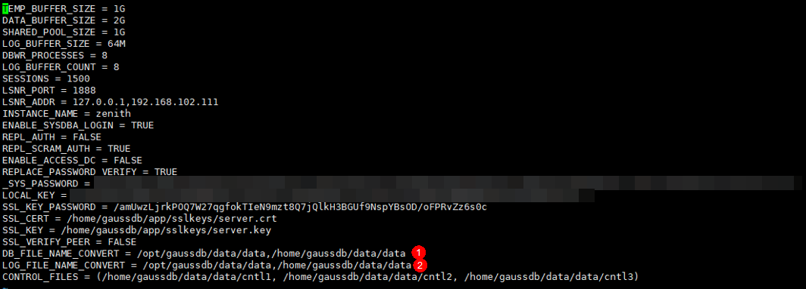

故障现象
GaussDB T单机部署形态恢复失败，事件提示“备份副本所在单机的安装目录（{0}）与恢复目标单机的安装目录（{1}）不一致，请确保在配置文件zengine.ini中配置了DB_FILE_NAME_CONVERT和LOG_FILE_NAME_CONVERT。请参考《OceanProtect 备份一体机 故障处理》或联系技术支持工程师协助处理”。
可能原因
备份副本所在单机和恢复目标单机安装目录不一致。
处理步骤
- 登录目标单机，依次执行以下命令进入配置文件的编辑窗口。
su - omm cd $GSDB_DATA/cfg vi zengine.ini
- 编辑“DB_FILE_NAME_CONVERT”和“LOG_FILE_NAME_CONVERT”参数的值（当参数不存在时需要在配置文件中补充，可参考示例图），参数值修改示例如下。
DB_FILE_NAME_CONVERT = {0}/data,{1}/data LOG_FILE_NAME_CONVERT = {0}/data,{1}/data
参数值的“{0}”和“{1}”分别对应恢复失败事件提示中的“{0}”和“{1}”。
配置文件示例图如下。

- 保存编辑内容后，重新执行恢复任务。